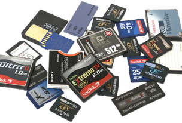

armazenamento

6. Defina os diversos tipos de memória:
RAM
Memória de acesso randômico ou Memória de acesso aleatório é um tipo de memória que permite a leitura e a escrita, utilizada como memória primária em sistemas eletrônicos digitais
DDR
Double Data Rate Synchronous Dynamic Random Access Memory é uma classe de memória de acesso aleatório dinâmico síncrono de taxa de dados dupla de circuitos integrados de memória usados em computadores.
DDR2
Double Data Rate 2 Synchronous Dynamic Random-Access Memory é uma interface de memória de acesso aleatório dinâmico síncrono de taxa de dados dupla. Ele substituiu a especificação DDR SDRAM original e foi substituído pelo DDR3 SDRAM. DDR2 DIMMs não são nem para a frente compatível com DDR3 e nem compatível com DDR.
DDR3
Double Data Rate 3 Synchronous Dynamic Random-Access Memory é um tipo de memória de acesso aleatório dinâmica síncrona com uma interface de alta largura de banda e está em uso desde 2007. É o sucessor de alta velocidade para DDR e DDR2 e predecessor para chips de memória dinâmica de acesso aleatório síncrono DDR4
DDR4
Double Data Rate 4 Synchronous Dynamic Random-Access Memory é um tipo de memória de acesso aleatório dinâmica síncrona com uma interface de alta largura de banda
DDR5
DDR5 SDRAM é a abreviação oficial de Double Data Rate 5 Synchronous Dynamic Random-Access Memory. Em comparação com seu predecessor DDR4 SDRAM, o DDR5 foi planejado para reduzir o consumo de energia, ao mesmo tempo em que dobra a largura de banda
Associe com qual processador /placa é utilizada
ROM
PROM
EPROM
EEPROM
12. Quais os tipos de conectores para unidade de armazenamento interna?
Ata
Sata
23. Quais os diversos tipos de armazenamento de dados que você conhece? Explique-os.
Disco Rígido
um disco rígido de computador é um tipo de tecnologia que armazena o sistema operacional, os aplicativos e os arquivos de dados que o computador usa nas suas funções.
CD
Um CD é um disco de acrílico, sobre o qual é impressa uma longa espiral (22,188 voltas, totalizando 5,6 km de extensão). As informações são gravadas em furos nessa espiral, o que cria dois tipos de irregularidades físicas: pontos brilhantes e pontos escuros. Estes pontos são chamados de bits, e compõem as informações carregadas pelo CD.
DVD
DVD sigla de "Digital Versatile Disc", (em português, Disco Digital Versátil) e seu formato digital "Digital Video Disc" para arquivar ou guardar dados, som e voz, tendo uma maior capacidade de armazenamento que o CD, devido a uma tecnologia óptica superior, além de padrões melhorados de compressão de dados, sendo criado no ano de 1995.
SSD
Vencendo em praticamente qualquer quesito em relação aos discos rígidos, com exceção do custo por GB, SSDs continuam a ser o melhor upgrade para a máquina que o usuário pode fazer. Isso mesmo para os modelos mais básicos, que são capazes de garantir mais alguns anos de vida útil para aquela máquina um pouco mais antiga.
Cartão de Memória e Pen Drive (USB)
Ambos utilizam o mesmo sistema, basicamente os dois são iguais, o que muda é o barramento. Porém o pen drive é mais aceito por dispositivos como sons, dvds e até PCs, embora o cartão de memória esteja cada vez mais integrado a estes dispositivos.RAM
Memória RAM
A memória RAM é um tipo de tecnologia que permite o acesso aos arquivos armazenados no computador. Diferentemente da memória do HD, a RAM não armazena conteúdos permanentemente. É responsável, no entanto, pela leitura dos conteúdos quando requeridos
Outros topicos